Portfolio case study · ComfyUI production pipeline · November 2026
Fan Gear Production Line
AI shoots the product. The licensed artwork and the colour standards never pass through the diffusion model.
One approved artwork, a four-row colourway table and a set of channel specs go in. One ComfyUI queue returns 36 production files: e-commerce images, social posts, localized banners, 300 dpi print files, ink separations and a spec sheet for each colourway. Every file is read back from disk and checked against 15 rules before the batch is signed off.
Role
Workflow design, custom nodes, QA rules, artwork and spec sheets
One laptop RTX 4080 (12 GB). All models run locally, no cloud APIs
Run time
276, 309 and 339 s for three cold runs of the full batch, model loading included
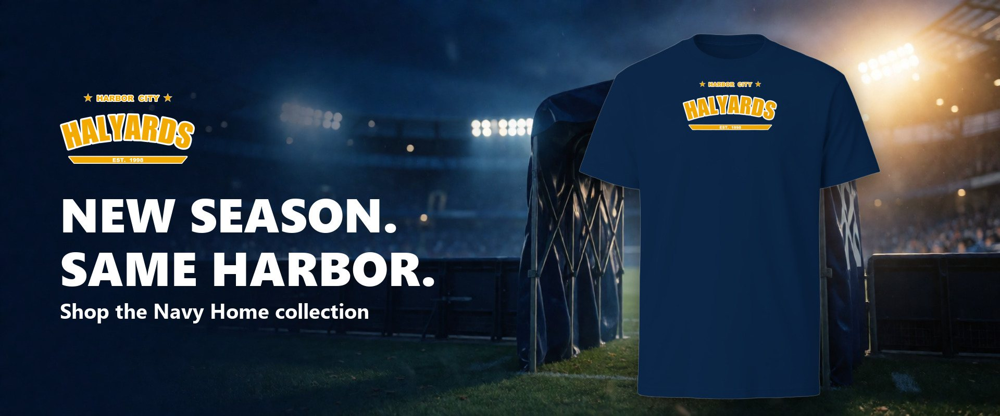
HCH-26-TEE-001_NVY-HOME_BANNER-EN-US_1920x800_v01.jpg Background plate generated by Krea2. Product composite, logo, type, colour choice for contrast and the file name all come from the pipeline. HARBOR CITY HALYARDS is a fictional team I made for this project.
Results from one queue
Files delivered36
9 per colourway across 4 colourways, plus QA reports, a contact sheet and a manifest
QA checks passed60/60
15 checks per colourway, measured on the saved files
Worst garment colour error1.08 ΔE00
Limit 2.0. A prompt-only shot of the same tee measured 3.50 to 4.80
Match to approved artwork0.96+
Pipeline 0.96 to 0.99. Prompt-only 0.37 to 0.51. Pass line 0.80
The brief
Production work, not concept art
I built this against a real job description for an AI Production Designer in licensed sports e-commerce. The role takes designs that a league or team has already approved and turns them into every file the business needs: each product, colourway, channel, size and language. It has to be fast, and it can never bend the licensor's brand standards.
So I treated the job description as a spec and built a workflow where each requirement has a concrete place in the graph.
The job asks for
Where it lives in the workflow
Node-based workflows such as ComfyUI, prompt design, batch generation
The whole graph. Prompt templates are filled from the colourway table, and one queue runs every colourway
Image refinement
SeedVR2 refines the 1 MP blank to 1920×2400. BiRefNet cuts the garment out
Protect team, league and partner brand standards
The logo never goes through diffusion. A control experiment measures what goes wrong when it does
Adapt work across products, channels, sizes, colourways and localizations
One table row per colourway. PDP, social 4:5 and banner specs. One banner per locale (EN-US, ES-US, JA-JP)
A placement template, STYLE_COLORWAY_CHANNEL_SIZE_vNN file names, and a manifest with one row per file
Automation: actions, scripts, plugins
A custom node pack that turns recolour, placement, layout, export and QA into reusable nodes
The rule
Generate the photography. Compute the brand.
A licensor approves a specific piece of artwork in specific inks. If an image model redraws that mark, even a good redraw is a new design that needs a new approval. So I split the work by what can be allowed to vary.
Generated · allowed to vary
The blank tee photograph (Krea2 Turbo), shot once per batch
Detail refinement and upscale (SeedVR2)
The garment cut-out mask (BiRefNet)
Background plates for social and banners, one per colourway
A text read-back for the control experiment (Qwen3-VL)
Computed · must not vary
Artwork pixels, taken from the approved separations
Spot ink colours and print order
Garment colour, matched to the colour standard
Print placement in inches from the high point shoulder (HPS)
Layouts, type size and text colour for contrast
File specs, naming, spec sheets and QA
The pipeline
One graph, five stages
The workflow has 51 nodes in seven labelled groups. The colourway table outputs a list, so ComfyUI runs every node after it once per colourway, and a batch report node collects the results at the end. The blank tee is shot once and cached, so adding a colourway does not reshoot it.
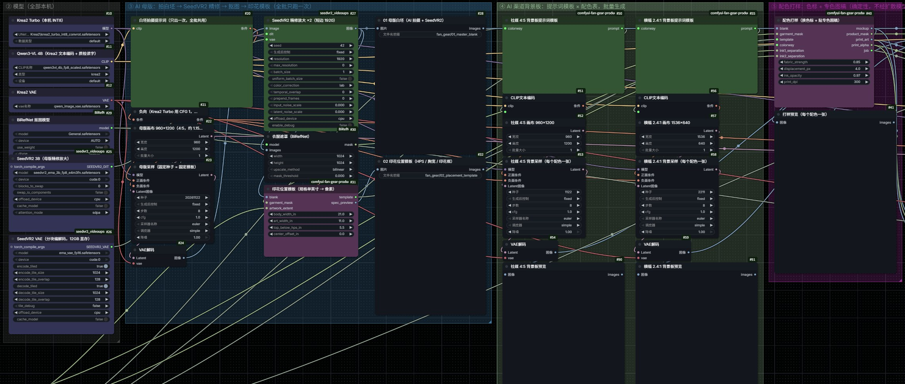
The middle of the real graph: model loaders, the master blank, the background plates and the colourway proof. Group labels are in Chinese and custom node names are bilingual, because I wrote the workflow for my own use first.
01Inputs
Approved art, a colourway table, a placement spec
The artwork arrives as separations in a single RGB file: the red channel is ink 1 (the fill) and the green channel is ink 2 (the outline and underlay). That keeps the inks independent, so every colourway is a recolour of the same approved shapes. The table holds one row per colourway. HEX values are the standards used for colour and QA. The last column holds plain colour words for prompts, because diffusion models cannot read HEX.
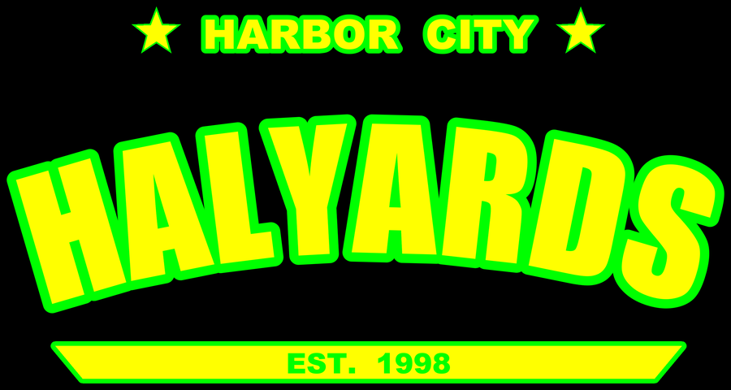
fan_gear_halyards_separations.png · red = ink 1, green = ink 2
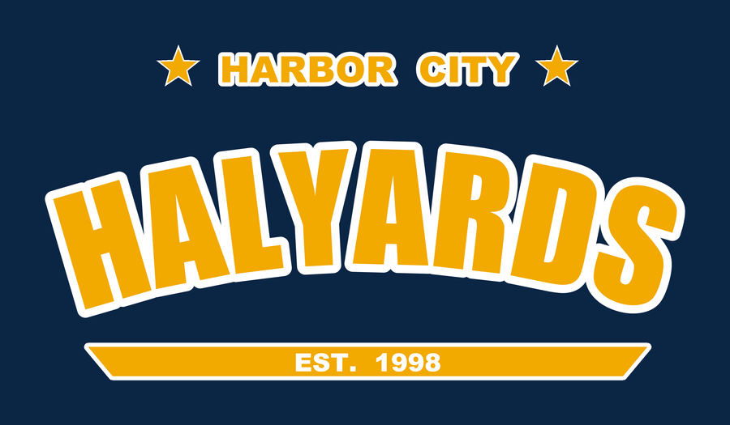
Reference render. The separations are drawn by a script, so the artwork is reproducible
Code
Name
Garment
Ink 1
Ink 2
Prompt words
NVY-HOME
Navy Home
#0B2545
#F2A900
#FFFFFF
deep navy blue ; bright gold ; white
WHT-AWAY
White Away
#F2F1EC
#0B2545
#F2A900
off-white ; deep navy blue ; bright gold
GLD-ALT
Gold Alternate
#F2A900
#0B2545
#FFFFFF
bright golden yellow ; deep navy blue ; white
BLK-CITY
Black City Edition
#17171B
#E9E3D3
#F2A900
charcoal black ; bone white ; bright gold
02Master blank · runs once per batch
Shoot a blank tee, then measure it in inches
Krea2 Turbo shoots a plain white ghost-mannequin tee at 960×1200 in 8 steps. SeedVR2 refines it to 1920×2400, and BiRefNet cuts out the garment. The placement node then turns the photo into a measured template. The top of the mask is the HPS. The garment's width between 55% and 72% of its height is the body width, which I set to 21 in for a size L laid flat. That gives a pixels-per-inch scale, and the print box follows from the spec: 11 in wide, top edge 5.5 in below HPS, centred.
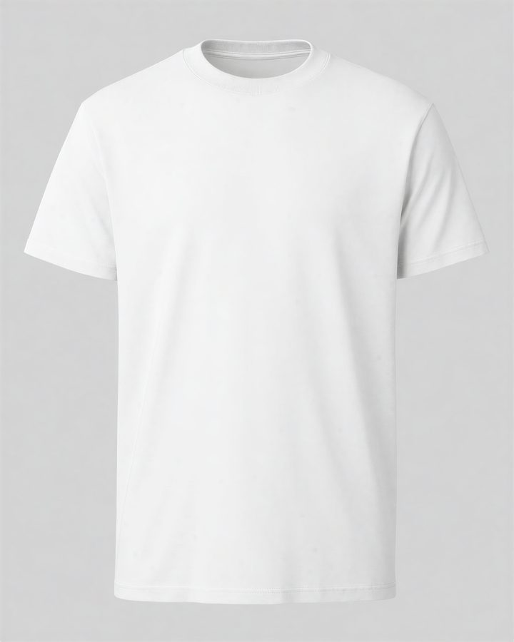
AI blank after SeedVR2. Fixed seed, so the whole batch shares one garment
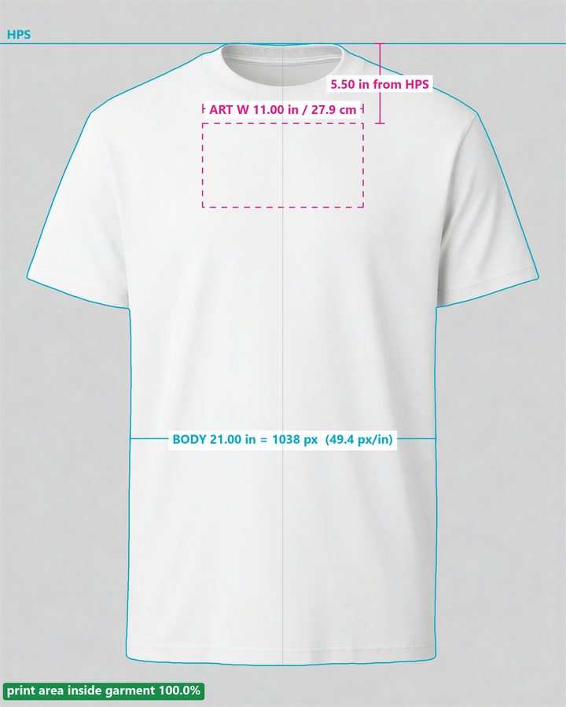
Placement template: body 21.00 in = 1038 px (49.4 px/in). The print box sits 100% inside the garment
03Background plates · per colourway
Prompt templates filled from the table
Two prompt templates, one for social 4:5 and one for 2.4:1 banners, take their colour words from the colourway row. Seeds are fixed, so the whole series shares one composition and only the light colour changes. The banner prompt asks for a calm, dark left half to leave room for type. Both prompts forbid people, text and logos, so nothing in the background competes with the licensed mark.
Cinematic wide panoramic advertising backdrop photograph. The mouth of an empty stadium players' tunnel opening onto a floodlit pitch at dusk, very shallow depth of field so everything is soft, glowing {garment} and {ink1} light from the floodlights, gentle haze. The left half of the frame is darker and calm with open negative space for text. No people, no text, no logos, no signage.
04Colourway proof · deterministic
Recolour in linear light, print in ink order
The garment is recoloured as an albedo swap in linear light. The median luminance of the blank maps exactly onto the colour standard, and every fold keeps its shading from the photo, so the fabric looks the same in every colourway.
garment_lin = standard_lin × (Y / median(Y))
The two inks are then composited in print order: ink 2 underlay first, ink 1 fill on top. The artwork is scaled into the print box, multiplied by the fabric shading and displaced by up to 4 px along the folds. That is the same job as a Displace plus Multiply pass in Photoshop, run by a node.
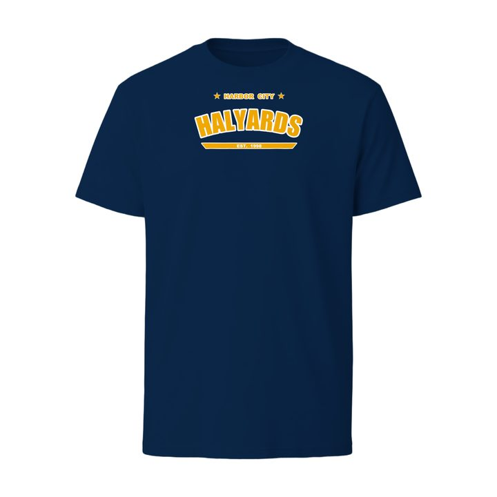
NVY-HOMEΔE 0.48
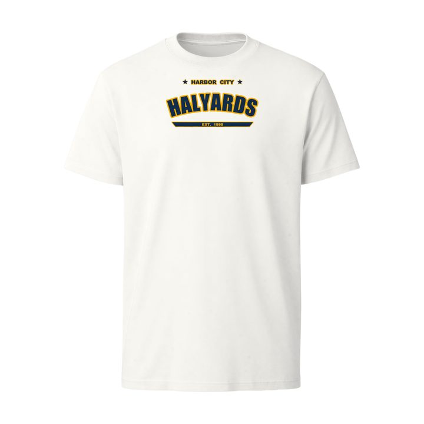
WHT-AWAYΔE 0.00
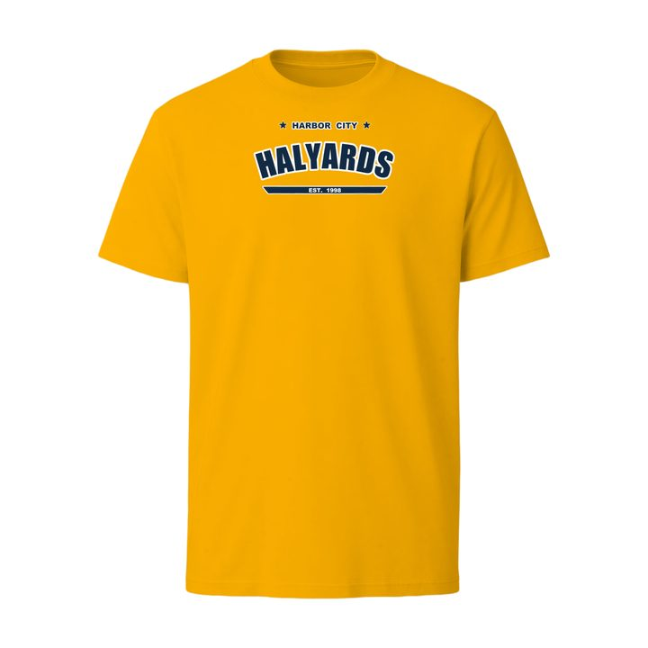
GLD-ALTΔE 0.17
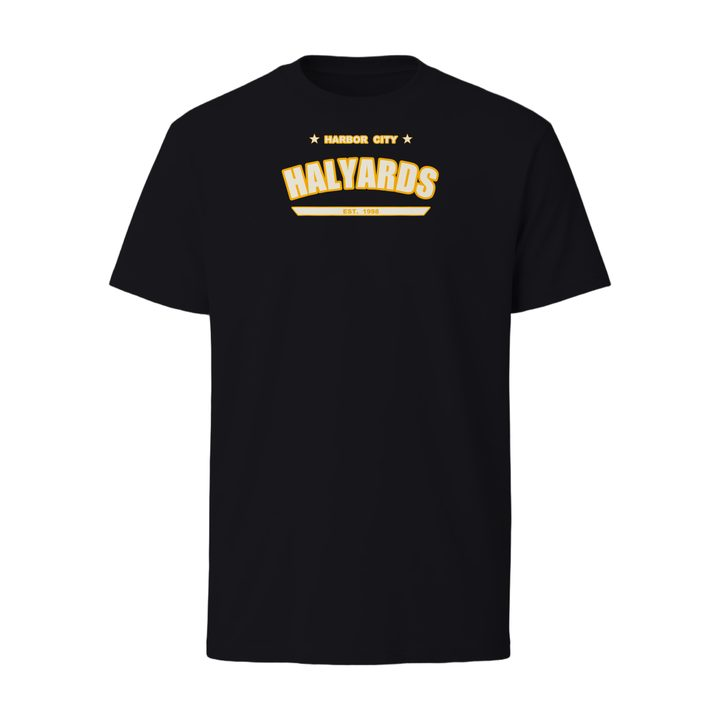
BLK-CITYΔE 1.08
PDP files, 2000×2000 on pure white, product at 85% of the frame. ΔE00 is the garment's median colour in the saved JPEG against its standard.
05Delivery and QA · per colourway, then per batch
Every channel, every language, every print file
The layout node builds each channel from the same proof. For banners it places the logo and headline in a safe zone on the left, shrinks the type to fit in at most two lines, and breaks Japanese at punctuation first. Text colour is picked from white, ink 1, ink 2 and near-black: the first one that clears 4.5:1 against the brightest and darkest 3% of pixels behind the text. If none does, the node adds a dark gradient behind the text and tries again.
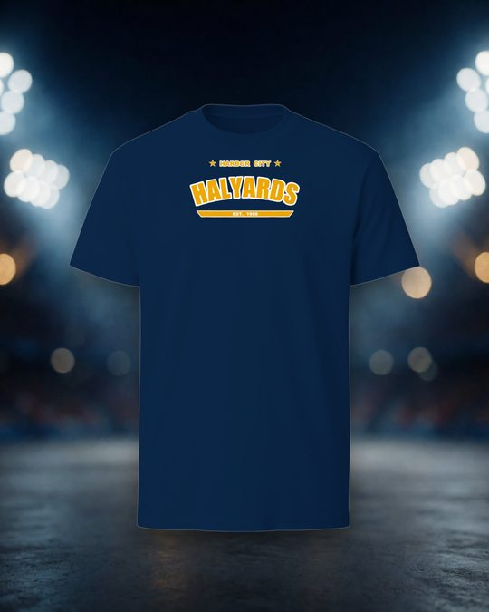
SOCIAL-4x5 · NVY
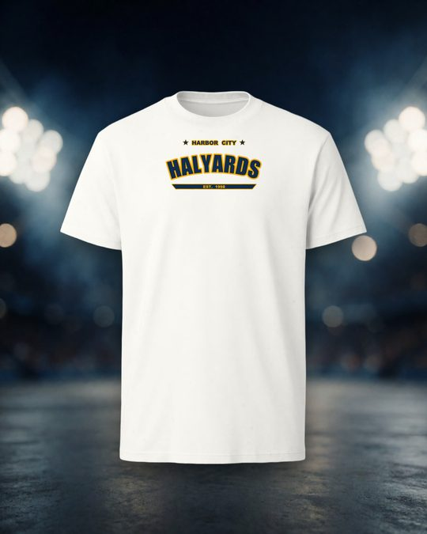
SOCIAL-4x5 · WHT
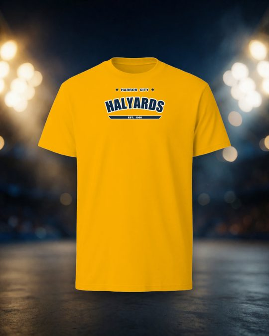
SOCIAL-4x5 · GLD
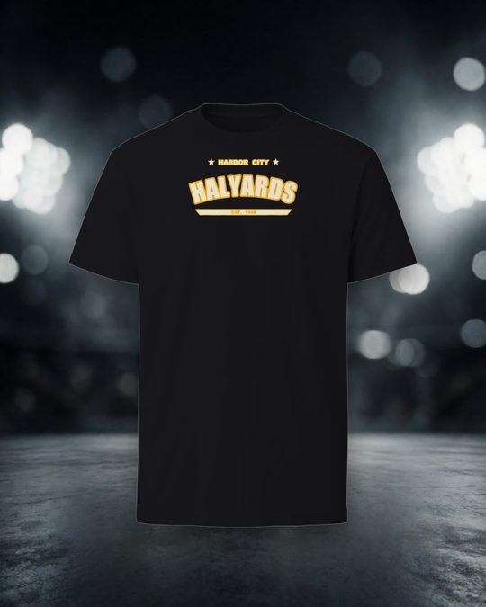
SOCIAL-4x5 · BLK
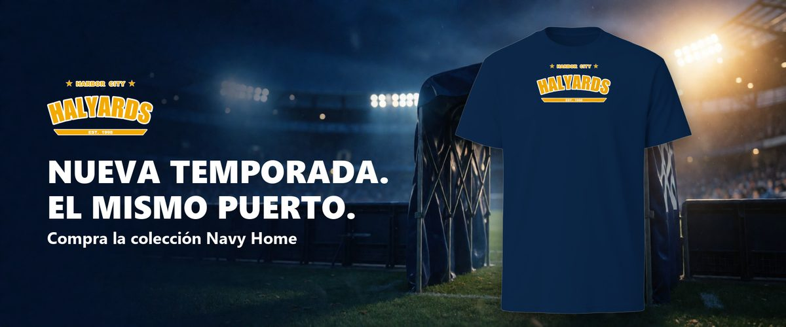
BANNER-ES-US · headline auto-sized to 78 px to fit two lines
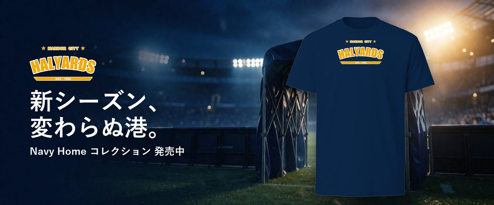
BANNER-JA-JP · line break at the 、 comma
Print-ready files
Each colourway gets a print PNG at true size (11.00 × 5.77 in at 300 dpi, 3300×1731 px) and one film positive per spot ink, where black means ink. A spec sheet in PDF and PNG records placement, colour standards and print order. The standards are screen colours. The sheet says physical matching goes through the licensor's lab dip, and I did not make up Pantone numbers.
HCH-26-TEE-001_NVY-HOME_SPEC_v01.pdf · one per colourway, written by the export node
QA on the files, not on memory
The export node writes every file, then opens it again and measures what a reviewer would. That catches problems that only show up after saving: JPEG compression shifting the garment colour, a missing ICC profile, a PNG without its DPI tag.
Check
Limit
Measured on
PDP size, background, product fill
2000×2000 · ≥99.5% pure white edge · 80–90%
Saved JPEG
Garment colour vs standard (PDP and social)
ΔE00 ≤ 2.0
Median colour of the garment, print area removed
Print file resolution and width
300 dpi · 11.00 in
PNG pHYs tag and pixel width
Ink 1 colour in the print file
ΔE00 ≤ 1.0
Saved PNG
Artwork inside the garment
≥ 99%
Print box against the garment mask
Banner text contrast, per locale
≥ 4.5:1 (WCAG AA)
Worst case against the text background
Banner text inside the safe zone, per locale
yes
Text bounding box
sRGB ICC profile embedded
all colour files
Saved files
Colourway
Garment ΔE00
Ink 1 ΔE00
Worst banner contrast
QA
NVY-HOME
0.48
0.00
11.8:1
PASS 15/15
WHT-AWAY
0.00
0.00
9.9:1
PASS 15/15
GLD-ALT
0.17
0.00
8.8:1
PASS 15/15
BLK-CITY
1.08
0.00
5.8:1
PASS 15/15
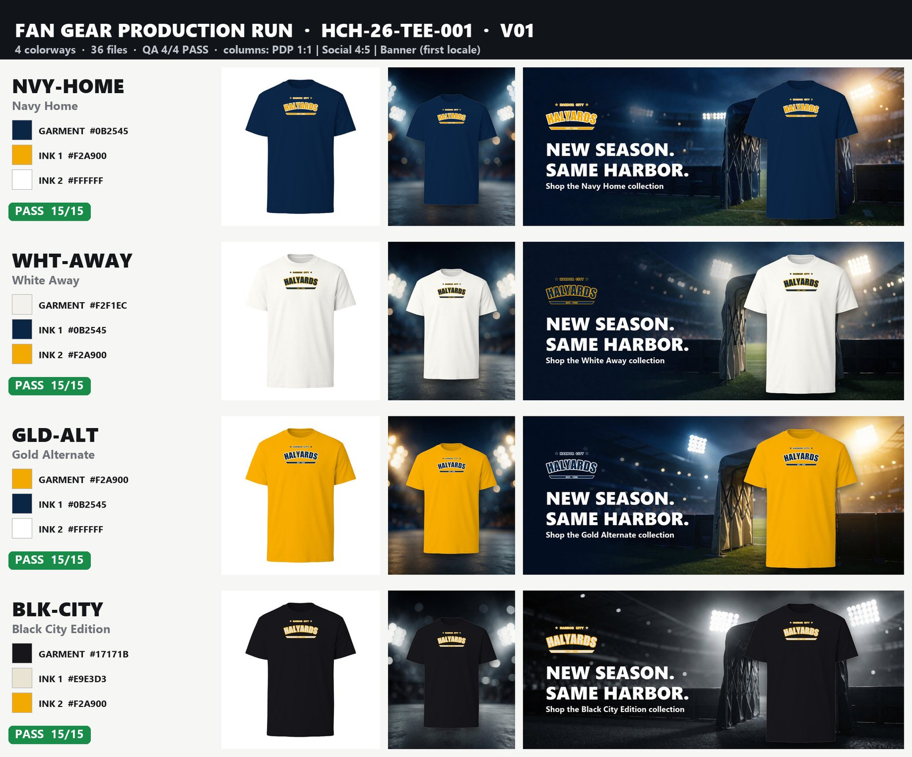
HCH-26-TEE-001_CONTACT-SHEET_v01.jpg · the batch report node also writes a manifest with one row per file:
The obvious objection to all this machinery is that a modern model can render text now. So the graph includes a control group. The same Krea2 model, on the same canvas size, gets a detailed prompt for each colourway that describes the logo, the exact words and the ink colours. Then each result is scored three ways:
Garment colour: ΔE00 against the standard, measured the same way as the pipeline.
Match to the approved artwork: the approved separations are rendered in that colourway's inks and searched for in the image with multi-scale normalized cross-correlation. 1.0 means the approved artwork is in the picture. A redrawn logo scores low even if every letter is right.
Spelling: Qwen3-VL transcribes the text on the chest.
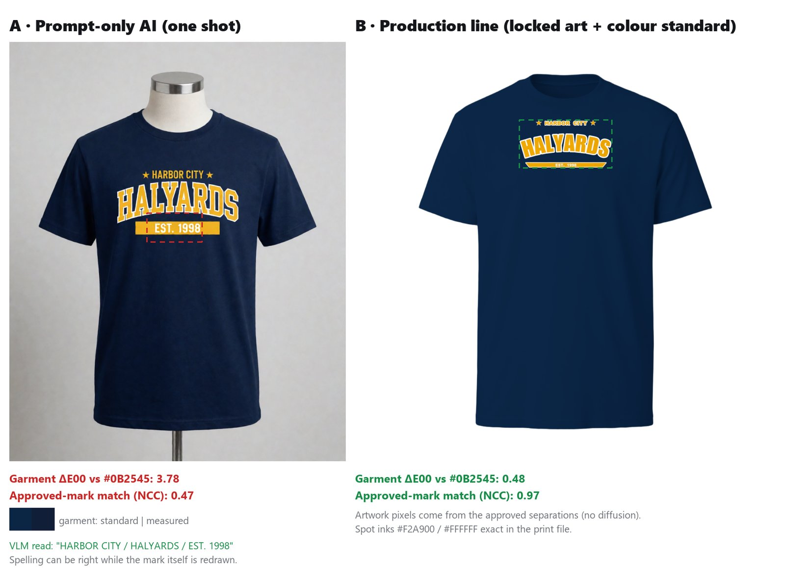
NVY-HOME. Prompt-only: garment ΔE00 3.78, artwork match 0.47, spelling correct. Pipeline: ΔE00 0.48, match 0.97. The dashed boxes show where the best match was found.
Match to approved artwork
Normalized cross-correlation, 0 to 1. Pass line 0.80
Prompt-onlyPipeline
Garment colour error
CIEDE2000 against the standard. Limit 2.0
Prompt-onlyPipeline
Colourway
Garment ΔE00 prompt-only / pipeline
Artwork match prompt-only / pipeline
Spelling (prompt-only)
NVY-HOME
3.78 / 0.48
0.47 / 0.97
Correct
WHT-AWAY
3.78 / 0.00
0.46 / 0.99
Correct
GLD-ALT
3.50 / 0.17
0.37 / 0.96
Correct
BLK-CITY
4.80 / 1.08
0.51 / 0.99
Correct
What I took from it
The model spelled HARBOR CITY, HALYARDS and EST. 1998 correctly in all four shots, so "AI can't do text" is no longer a reason to keep logos out of the model. The real problems are different. Every prompt-only shirt missed its colour standard by roughly double the limit. Every logo was a new design with a different typeface, arch and bar, and each colourway came out different from the others. The navy shot also put the shirt on a visible mannequin stand, although the prompt asked for a ghost mannequin. A licensor approves the artwork itself, so a correctly spelled redraw still fails approval.
Engineering notes
What took the most work
Calibrating the artwork match
The first version scored my own pipeline at only 0.59 to 0.84. Correlation is very sensitive to scale: a 2% size error drops the score by about 0.2. I switched to a coarse search in steps of 2% of the frame width, then a fine search in 0.2% steps around the best result. Pipeline scores rose to 0.96 to 0.99 while prompt-only stayed at 0.37 to 0.51, and I set the pass line at 0.80, between the two groups.
Eight custom nodes
Colourway table, colourway prompt, placement template, colourway proof, channel layouts, export and QA, batch report, and the prompt-only audit. Each does one production job a designer would otherwise do by hand in Photoshop, and each one exposes the values a designer changes: inches, thresholds, headlines, versions.
Shipping a workflow that loads correctly
I generate the workflow file from ComfyUI's node definitions. The editor quietly adds a hidden widget to any integer input named seed, which shifted every SeedVR2 setting by one slot when the file was opened. I fixed the generator and then checked the result in the editor: the graph it queued matched the tested graph, and all 50 executable nodes came back from cache.
Type that survives three languages
English, Spanish and Japanese headlines differ a lot in length and break rules. The layout node shrinks the headline until it fits in two lines inside the safe zone, breaks Japanese at 、 and 。 before falling back to single characters, and records the final size and text box in the QA report.
Known limits
Where this stops working
Solid fabrics only. The recolour starts from a white blank, which suits solid cotton tees. Heather, tie-dye or colour-blocked garments need their own blank or a real sample photo.
Screen colour, not physical colour. The HEX standards are for digital assets. Physical colour is approved against the licensor's lab dip.
Scale comes from the silhouette. This works for front-view ghost-mannequin shots. Angled or on-model shots need a scale entered by hand.
2D displacement. Heavy folds, hoodie pockets and cuffs need a real displacement pass in Photoshop or CLO3D.
The product is not relit. Social and banner composites keep studio light on the product, which suits a floating-product look but not an in-scene one.
System fonts. The layouts use Segoe UI Black and Yu Gothic. A real project would use the licensor's brand fonts.